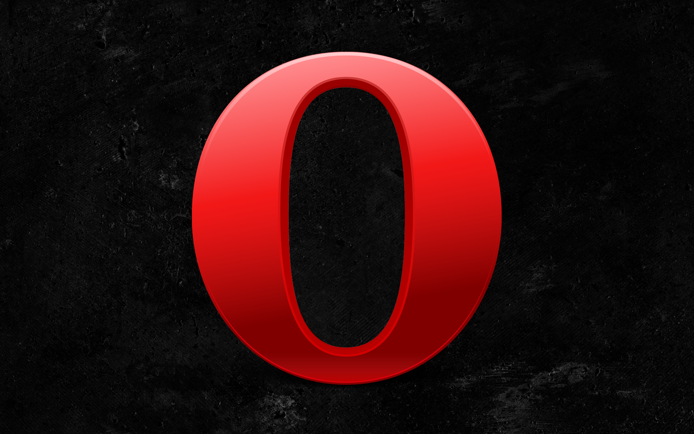

chrome

firefox

safari

opera

ie
Google Chrome，又称Google浏览器，是一个由Google（谷歌）公司开发的网页浏览器。
Mozilla Firefox，中文名通常称为“火狐”或“火狐浏览器”，是一个开源网页浏览器。
Safari，是苹果计算机的最新操作系统Mac OS X中的浏览。
Internet Explorer，原称Microsoft Internet Explorer(6版本以前)和Windows Internet Explorer(7，8，9，10版本)， 简称IE，是美国微软公司推出的一款网页浏览器。它采用的排版引擎(俗称内核)为Trident。
Internet Explorer，原称Microsoft Internet Explorer(6版本以前)和Windows Internet Explorer(7，8，9，10版本)， 简称IE，是美国微软公司推出的一款网页浏览器。它采用的排版引擎(俗称内核)为Trident。
Internet Explorer，原称Microsoft Internet Explorer(6版本以前)和Windows Internet Explorer(7，8，9，10版本)， 简称IE，是美国微软公司推出的一款网页浏览器。它采用的排版引擎(俗称内核)为Trident。
Internet Explorer，原称Microsoft Internet Explorer(6版本以前)和Windows Internet Explorer(7，8，9，10版本)， 简称IE，是美国微软公司推出的一款网页浏览器。它采用的排版引擎(俗称内核)为Trident。
Internet Explorer，原称Microsoft Internet Explorer(6版本以前)和Windows Internet Explorer(7，8，9，10版本)， 简称IE，是美国微软公司推出的一款网页浏览器。它采用的排版引擎(俗称内核)为Trident。
©点灯人